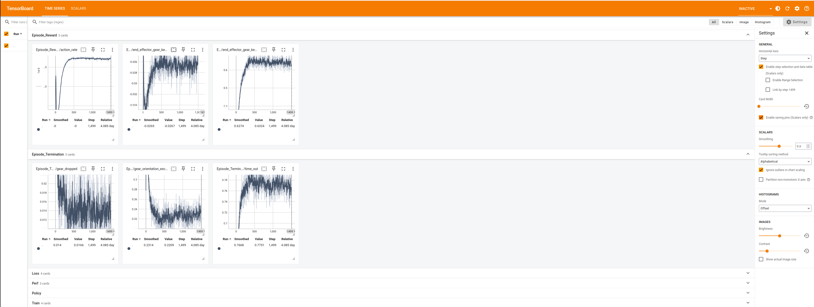

Validating an RL Policy in Isaac Lab#
In this lesson, we will validate a reinforcement learning (RL) policy that has been trained using IsaacLab.
Visualize Training Metrics with TensorBoard#
You can monitor training progress in real-time using TensorBoard.
In a terminal, run:
${ISAACLAB}/isaaclab.sh -p -m tensorboard.main --logdir /home/ubuntu/Downloads/policy
Navigate to the following address in a web browser to visualize the training metrics:
http://localhost:6006

Validate Policy Performance in Isaac Lab#
The policy performance can be validated by deploying it in Isaac Lab by running following command:
${ISAACLAB}/isaaclab.sh -p ${ISAACLAB}/scripts/reinforcement_learning/rsl_rl/play.py \
--task Isaac-Deploy-GearAssembly-UR10e-2F140-ROS-Inference-v0 \
--num_envs 4 \
--checkpoint /home/ubuntu/Downloads/policy/model.pt
A successfully trained policy should be able to insert all 3 gears with the gear base in different locations.

You can stop the simulation by pressing Ctrl+C in the terminal.